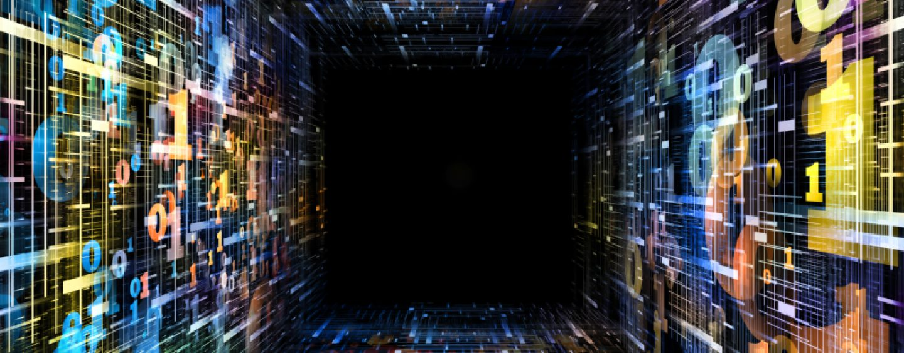

A pesquisa para o desenvolvimento da computação quântica iniciou-se já na década de 50 quando pensavam em aplicar as leis da física e da mecânica quântica nos computadores. Em 1981 em uma conferencia no MIT o físico Richard Feynman apresentou uma proposta para utilização de sistemas quânticos em computadores, que teriam então uma capacidade de processamento superior aos computadores comuns. Já em 1985, David Deutsch, da Universidade de Oxford, descreveu o primeiro computador quântico, uma Máquina de Turing Quântica, ele simularia outro computador quântico. Depois de Deutsch apenas em 1994 houve notícias da computação quântica, quando em Nova Jersey, no Bell Labs da AT&T, o professor de matemática aplicada Peter Shor desenvolveu o Algoritmo de Shor, capaz de fatorar grandes números numa velocidade muito superior à dos computadores convencionais. Em 1996, Lov Grover, também da Bell Labs, desenvolveu o Speedup, o primeiro algoritmo para pesquisa de base de dados quânticos. Nesse mesmo ano foi proposto um modelo para a correção do erro quântico. Em 1999 no MIT foram construídos os primeiros protótipos de computadores quânticos utilizando montagem térmica. No ano de 2007 surge o Orion, um processador quântico de 16 qubits que realiza tarefas praticas foi desenvolvido pela empresa canadense D-Wave. Em 2011 a D-Wave lançou o primeiro computador quântico para comercialização, o D-Wave One, que possui um processador de 128 qubits. Porém o D-Wave One ainda não é totalmente independente, precisa ser usado em conjunto com computadores convencionais.
Ainda não existe hoje um computador inteiramente quântico funcionando. Porém, empresas como a canadense "D-Wave", entre outras tem feito promessas, que se forem cumpridas, anunciarão um novo horizonte para a realidade e o mercado de computadores domésticos, científicos e corporativos. Muitos protótipos de computadores quânticos já foram testados em laboratórios de todo o mundo, porém o seu desenvolvimento em larga escala ainda pode estar distante. E dependente de muitas pesquisas e investimentos. No Brasil há diversos núcleos de pesquisas na área da computação quântica. Há um grupo no LNCC (Laboratório Nacional de Computação Científica) formado por orientandos de projetos de iniciação científica, mestrado e doutorado. Além de grupos pertencentes as instituições de ensino superiores, com destaque para universidades do Rio de Janeiro e da Paraíba. Os grupos do Brasil ligados a hardware quântico costumam desenvolver apenas pequenos protótipos, mas cooperam com os grandes pesquisadores estrangeiros da área. As dificuldades de se criar um computador quântico reside no fato de que os processos computacionais passam a ser no universo atômico, que carece de tecnologias de manipulação ainda. Um dos principais problemas, por exemplo, é a alta taxa de erros causada pelo meio ambiente, devido a extrema sensibilidade da tecnologia.
